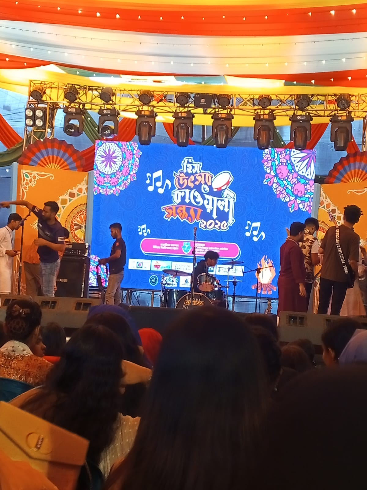

Our university is proud to host its grand annual celebration, the Heem Utsav, a vibrant festival that encapsulates the spirit of unity, culture, and creativity. This event is a cherished tradition where students, faculty, and guests come together to showcase their talents and celebrate our diverse heritage.
Adding a melodic charm to the festivities, the Kawali Evenings bring soulful performances that echo the beauty of harmony and devotion. These evenings are a serene blend of music and culture, creating an ambiance that leaves everyone mesmerized.
The university recently hosted its annual Pita Festival, a vibrant celebration of culture, flavors, and community spirit. This lively event brought together students, faculty, and visitors to enjoy an array of delicious pita-inspired dishes from around the world. Alongside the festival, an impressive Art Exhibition showcased the creative talents of university students. From captivating paintings to intricate sculptures, the exhibition highlighted the diversity and innovation within the student body, creating a perfect blend of gastronomy and artistic expression. Both events celebrated creativity, collaboration, and the rich cultural fabric of the university.
Back to Resume